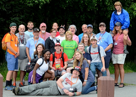

In June a week after school was over, my mom and I travled to Martha's Vineyard, MA. We spent a week there on the island. It was the first time we've been able to return in roughly eight years.

I spent a week of summer 2017 in Anchorage, Alaska on a mission trip, through CBC Missions, sponsored by Graceworks. CBC missions refers to Clayton Baptist Church and is located in Clayton, Georgia. This mission trip was my first and extrememly nervewrecking at first; but after having gone, I don't regret a thing about the experience it gave me. I was giving the opportuntity to be a blessing in other peoples lives, as well as exploring areas I never would have previously dreamed of seeing in person.
The week after I returned from Alaska, I moved from Clayton, GA to Greenville, SC. It is not the first time my family has moved to a different state.
Between the trips and pretty much when I was hanging out with friends, I worked. I curently work at Chick-fil-a and will be going onto three years in October.
It was a summer well spent,
Alysha P.